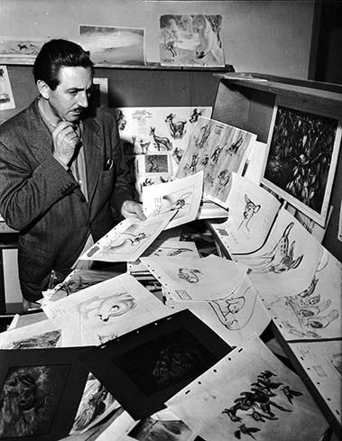
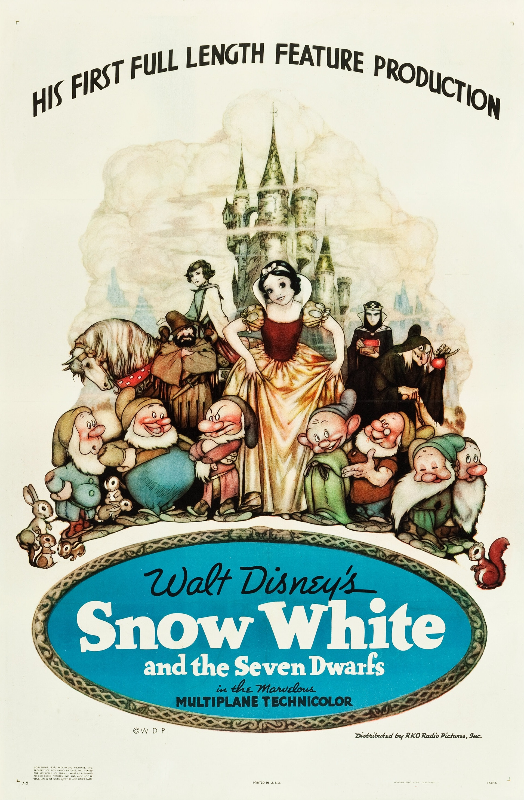

უოლტ დისნეი: შემოქმედებითი ხედვის მქონე ადამიანის ცხოვრება
ვალტ დისნეი ერთ-ერთი ყველაზე გავლენიანი ფიგურაა გართობის ინდუსტრიის ისტორიაში. მისმა წარმოსახვამ შეცვალა ანიმაცია, კინო და თემატური პარკები, შექმნა მემკვიდრეობა, რომელიც დღემდე შთააგონებს ყველა ასაკის ადამიანს მთელ მსოფლიოში. უბრალო დასაწყისიდან გლობალური იმპერიის შექმნამდე, დისნეის ცხოვრების გზა არის შემოქმედების, შრომისმოყვარეობისა და ოცნებების რწმენის მაგალითი.
ადრეული ცხოვრება და ბავშვობა
ვალტერ ელიას დისნეი დაიბადა 1901 წლის 5 დეკემბერს, ჩიკაგოში, ილინოისის შტატში. იგი გაიზარდა უბრალო ოჯახში და ბავშვობის დიდი ნაწილი მისურის შტატში გაატარა, სადაც ადრეულ ასაკში გამოავლინა ხატვისა და ისტორიების თხრობის სიყვარული. ბავშვობაში ვალტი ხშირად ყიდდა საკუთარ ნახატებს მეზობლებსა და მეგობრებს, რაც მის მომავალ ნიჭზე მიუთითებდა. მისი ბავშვობა ყოველთვის მარტივი არ ყოფილა. ოჯახისთვის დახმარების მიზნით, იგი ხანგრძლივად მუშაობდა გაზეთების დამტარებლად. ამ გამოცდილებამ მას ასწავლა დისციპლინა და გამძლეობა, რაც მომავალში მისი ძლიერი სამუშაო ეთიკის საფუძველი გახდა.
პირველი ნაბიჯები ანიმაციაში
პირველი მსოფლიო ომის დროს სასწრაფო დახმარების მანქანის მძღოლად მუშაობის შემდეგ, დისნეი კანზას სიტიში გადავიდა, რათა ხელოვნებისა და ანიმაციის კარიერა დაეწყო. იგი მუშაობდა მცირე ანიმაციურ სტუდიაში და მალევე დაიწყო მოკლემეტრაჟიანი ანიმაციური ფილმების შექმნა. მისი ადრეული ბიზნესპროექტები წარუმატებელი აღმოჩნდა და ერთ მომენტში გაკოტრების წინაშეც დადგა. მიუხედავად ამისა, დისნეი არ დანებდა. 1920-იან წლებში იგი ძმასთან, როი დისნეისთან ერთად, ჰოლივუდში გადავიდა და დააარსა Disney Brothers Studio, რომელიც მოგვიანებით The Walt Disney Company გახდა. ეს ნაბიჯი მისი კარიერის ახალი ეტაპის დასაწყისი იყო.
მიკი მაუსის შექმნა
დისნეის კარიერის ერთ-ერთი ყველაზე მნიშვნელოვანი მომენტი 1928 წელს დადგა, როდესაც შეიქმნა მიკი მაუსი. მისი დებიუტი შედგა ფილმში Steamboat Willie, რომელიც ერთ-ერთი პირველი ანიმაცია იყო სინქრონიზებული ხმით. პერსონაჟი სწრაფად გახდა პოპულარული და დისნეის სახელი ფართოდ ცნობილმა გახადა. მიკი მაუსი მხოლოდ მულტფილმის გმირი არ იყო — იგი სიმბოლიზებდა ოპტიმიზმს, სიხარულსა და შეუპოვრობას. მისი წარმატება დისნეის საშუალებას აძლევდა გაეგრძელებინა ექსპერიმენტები ანიმაციასა და მოთხრობებში.
.jpg)
ანიმაციის რევოლუცია
ვალტ დისნეი არ კმაყოფილდებოდა მოკლე და მარტივი მულტფილმებით. მას სჯეროდა, რომ ანიმაციას შეეძლო ღრმა ემოციების გადმოცემა და სრულმეტრაჟიანი ფილმების დონეზე ასვლა
ხმა და პერსონაჟების ანიმაცია
Steamboat Willie-ში გამოყენებულმა სინქრონიზებულმა ხმამ ანიმაციის ინდუსტრია მთლიანად შეცვალა. ხმა პერსონაჟებს სიცოცხლეს სძენდა და მაყურებელს მათთან ემოციურ კავშირს აძლევდა. დისნეიმ განსაკუთრებული ყურადღება დაუთმო პერსონაჟების მოძრაობასა და გამომეტყველებას. ანიმატორები სწავლობდნენ ადამიანებისა და ცხოველების რეალურ მოძრაობებს, რათა ემოციები უფრო დამაჯერებელი ყოფილიყო. ეს მიდგომა საფუძვლად დაედო თანამედროვე ანიმაციას.
ტექნოლოგიური ინოვაციები და ფერი
დისნეი მუდმივად ცდილობდა ტექნოლოგიური საზღვრების გაფართოებას. 1930-იან წლებში მისმა სტუდიამ სრულფასოვანი ფერადი ანიმაცია დანერგა Technicolor-ის გამოყენებით. ფერმა ანიმაციას განწყობა, ატმოსფერო და სიღრმე შესძინა. ასევე შეიქმნა მულტიპლანური კამერა, რომელიც სხვადასხვა ფენის დამოუკიდებელი მოძრაობის მეშვეობით სიღრმის ეფექტს ქმნიდა. ამ ტექნოლოგიამ ანიმაცია უფრო კინემატოგრაფიული გახადა.
პირველი სრულმეტრაჟიანი ანიმაციური ფილმები
1937 წელს გამოსულმა ფიფქია და შვიდი ჯუჯა პირველმა დაამტკიცა, რომ სრულმეტრაჟიან ანიმაციურ ფილმს შეეძლო დიდი წარმატების მიღწევა. მიუხედავად სკეპტიციზმისა, ფილმმა საოცარი წარმატება მოიპოვა და ანიმაციის მომავალი შეცვალა. შემდგომმა ფილმებმა, როგორიცაა პინოქიო, ფანტაზია, დამბო და ბემბი, დაადასტურა, რომ ანიმაციას შეეძლო სერიოზული თემების განხილვა და ღრმა ემოციების გადმოცემა.
დისნეილენდი და ახალი გართობის ფორმა
დისნეის წარმოსახვა მხოლოდ ეკრანით არ შემოიფარგლებოდა. 1955 წელს კალიფორნიაში გაიხსნა დისნეილენდი — ადგილი, სადაც ოჯახებს შეეძლოთ ისტორიების რეალურ სამყაროში განცდა. ეს იყო სრულიად ახალი ტიპის გასართობი სივრცე. დისნეილენდის წარმატებამ გზა გაუხსნა Walt Disney World-სა და სხვა თემატურ პარკებს მთელ მსოფლიოში.
მემკვიდრეობა და გავლენა
ვალტ დისნეი გარდაიცვალა 1966 წლის 15 დეკემბერს, თუმცა მისი ხედვა და იდეები დღესაც ცოცხალია. The Walt Disney Company გახდა ერთ-ერთი უდიდესი გასართობი კომპანია მსოფლიოში. დისნეის მიერ შექმნილი ანიმაციის პრინციპები დღემდე გამოიყენება ანიმაციის სწავლებისა და წარმოების პროცესში. მან დაამტკიცა, რომ ანიმაცია მხოლოდ გართობა არ არის — ის ხელოვნებაა, რომელსაც შეუძლია ადამიანების შთაგონება და გაერთიანება.ვალტ დისნეის ცხოვრება გვიჩვენებს, რომ წარმოსახვა, შრომა და რწმენა შეუძლებელს შესაძლებლად აქცევს. მისი მემკვიდრეობა აგრძელებს თაობების შთაგონებას და ამტკიცებს, რომ ოცნებები მართლაც შეიძლება ახდეს.